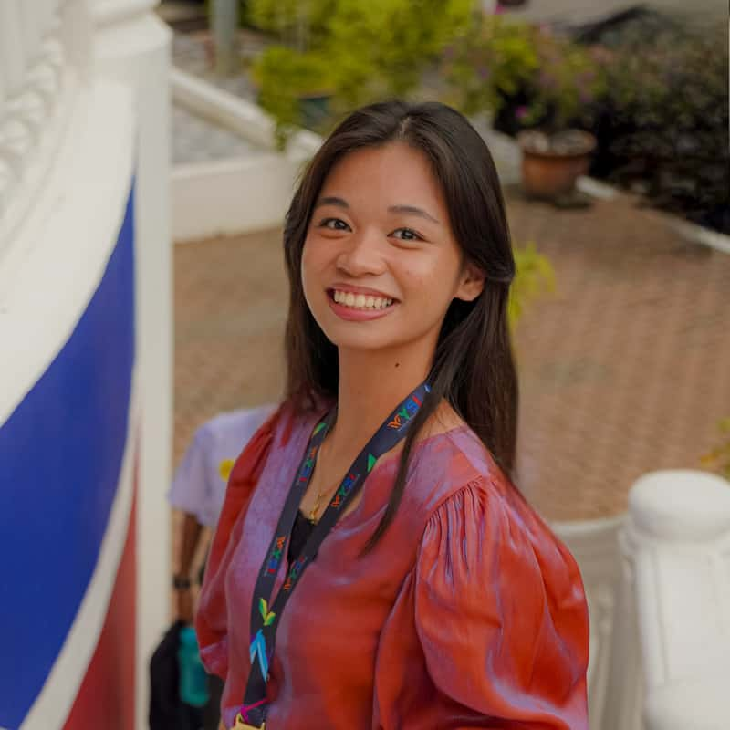

Rinoa Radovan | WDD 130
Hello! My name is Rinoa Radovan, and I'm from the Philippines. Something about me is that I’ve always been very art-inclined, and I spend much of my free time reading, journaling, sketching, and painting. I am currently studying Web Development and Design under the course path of Web and Computer Programming because of my strong interest in graphic design and my desire to expand my creative portfolio using the knowledge I will gain through this journey. While the technical aspects of this field are quite new to me, I am dedicated to persevering and mastering these skills, as I believe they will be essential for my professional growth. I'm really looking forward to this journey and am excited for what the future holds for me in this industry.